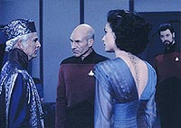
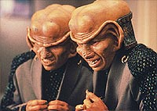
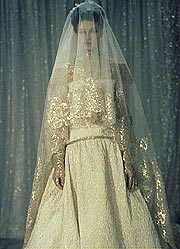
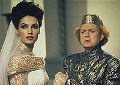
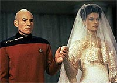

|
MANCHETE
DO EPISDIO
Jean-Luc
Picard sofre dilema tico e
deixa transparecer seu lado humano
Episdio
anterior | Prximo
episdio
Sinopse:
Data Estelar: 45761.3.
A guerra entre os sistemas Krios e Valt Menor est marcada para
terminar a bordo do territrio neutro da Enterprise, em uma Cerimnia
de Reconciliao. O embaixador Kriosiano, Briam, chega primeiro,
com um presente para o lder Valts Alrik, um item frgil e
insubstituvel que ele pede que seja guardado em local onde somente
presenas autorizadas poderiam ocorrer.

Enquanto ruma para encontrar Alrik, a Enterprise encontra uma nave
auxiliar Ferengi e transporta seus dois ocupantes a bordo. Picard e
a tripulao descobrem que sua chegada no foi coincidncia,
quando um dos Ferengi pego tentando roubar o presente. Aps ser
abalada pelo aliengena, a estrutura em formato de casulo que
guarda o presente se dissolve, revelando uma bela e extica mulher
em seu interior.
A mulher, Kamala, explica que uma metamorfa emptica, uma
criatura rara nascida com a habilidade de sentir o que seu
companheiro deseja e tornar-se o que ele quer que ela seja. Desde o
nascimento ela foi criada para ser um presente para Alrik, como uma
oferenda de paz. Entretanto, como seu casulo foi quebrado
prematuramente, ela est vulnervel, enviando poderosos sinais
sexuais para todo homem que encontra. Briam pede que ela seja
confinada em seus alojamentos at Alrik chegar, mas isso choca
Beverly, que diz a Picard que ele est ajudando a transportar
Kamala para uma vida de virtual prostituio. Ela o convence a
falar com a mulher e libert-la de seus aposentos.

Picard tem dificuldades para resistir beleza de Kamala, e por
isso ele designa Data, que imune ao charme da mulher, para ser
sua escolta. Data leva Kamala ao bar panormico, onde todos os
homens ficam atrados por ela. Kamala percebe que est criando
confuso e decide voltar, de livre e espontnea vontade, a seus
aposentos. Enquanto isso, enquanto Picard e Geordi ajudam a preparar
a cerimnia, os Ferengis tentam subornar Briam para ter Kamala.
Quando ele se recusa, os aliengenas o deixam inconsciente.
Com Briam incapaz de cumprir seus deveres, Picard requisitado
para assumir seu papel nas negociaes de paz. Infelizmente, o
capito sabe muito pouco dos costumes e rituais do povo Kriosiano,
e precisa pedir ajuda a Kamala. Conforme trabalham juntos, Picard
sente maior dificuldade em resistir mulher. Kamala confessa que
tambm est tentando resistir e que acha irnico ter encontrado
um homem como Picard um dia antes de conhecer o homem com quem
passar o resto da vida.
Alrik chega, e Picard chamado para entregar Kamala a seu novo
companheiro na Cerimnia de Reconciliao. Entretanto, quando ele
chega em seu quarto, ela diz que est apaixonada e
indissoluvelmente ligada a ele. Ele a pergunta se ela pretende
seguir com a cerimnia, e ela diz que precisa colocar seus deveres
acima de seus desejos.
Comentrios:
 "The
Perfect Mate" mais um daqueles episdios que se baseia
em elementos do cotidiano e explora a atmosfera do sculo 24 para
gerar interesse na audincia. Pode-se dizer que o segmento toca em
vrios assuntos, que vo desde escravido a prostituio,
passando por infidelidade.
Mas, na verdade, o episdio est longe de discutir grandes questes.
Ele muito mais um estudo de personagens --feito especialmente
sobre Picard. Estamos acostumados a ver um capito cuja firmeza de
carter to grande que nada, absolutamente nada, pode abalar.
Agora, e se o oponente a ser vencido dessa vez impossvel de se
ignorar? E pior: e se uma mulher irresistvel?
Levando por esse lado, extremamente interessante acompanharmos
cada minuto do episdio, que testa Picard at seus limites
extremos. Um dos maiores sonhos de cada ser humano encontrar seu
par ideal --sua "alma gmea", por assim dizer. Kamala
capaz de se tornar essa alma gmea para qualquer um, e o bom capito
o feliz ganhador.
Um dilema surge da: de um lado, sua extrema firmeza de carter.
Afinal, essa mulher tem um destino glorioso --casar-se com um homem
e encerrar anos de conflito. Nunca Picard permitiria que alguma
coisa, principalmente ele mesmo, interrompesse esse importante
processo.

Do outro lado, sua felicidade pessoal. Picard est extremamente
envolvido, no s pela beleza fsica irresistvel da aliengena,
mas tambm por ela representar simplesmente tudo o que ele sempre
sonhou em uma mulher (lembre-se, ela emptica e capaz de ser
exatamente o que seu companheiro quer dela). A felicidade parece
estar to prxima de suas mos. O problema que o preo dela
pode ser a continuao de uma guerra.
O mais interessante que no so nem as consequncias que o
afligem, mas sim o simples fato de que seguir no curso que levaria
sua satisfao pessoal errado, por qualquer ngulo que se
olhe. Primeira Diretriz, regras da Federao, tica pessoal e
posio neutra no conflito precisariam ser jogadas pela janela
para justificar essa posio --algo que Picard nunca aceitaria
fazer.
Algum pode pensar que Kamala no merece o companheiro que vai
receber, ou que ainda ela teria direito a escolher a pessoa ideal
para ela, justificando assim a quebra de protocolo (que o capito j
mostrava certa abertura para cometer, caso fosse a vontade da
mulher). Mas importante lembrar que Kamala s se tornou a pessoa
sensvel que era graas ligao com Jean-Luc. O fato de sua
transformao ser definitiva pouco tem a ver com o que ela queria,
mas sim com o que ela havia se tornado. Portanto, achar que ela
"queria" ficar com o capito, e no com Alrik,
interpretar um acidente de percurso (a abertura prematura do casulo)
como auto-determinao e vontade consciente.
O resultado mais interessante do episdio que ele finalmente nos
mostra, de forma transparente, quem Jean-Luc. No o capito
Picard, mas simplesmente Jean-Luc. interessante notar que no fim,
o senso tico que Kamala derivou do capito foi mais forte que o
dele prprio. Se a mulher tivesse dito que no queria seguir com a
cerimnia, o capito provavelmente iria interceder em seu favor.
Mas ela colocou seu dever acima de tudo, como Picard normalmente
faria.
Alm disso, extremamente curioso observar Jean-Luc baixando a
guarda. Duas cenas transparecem isso de forma preciosa. Primeiro,
quando ele conversa com Beverly e pede claramente por uma amiga,
abrindo mo de todo e qualquer relacionamento de subordinao ou
mesmo coleguismo que haveria entre os dois. No eram o capito e a
oficial mdica-chefe. Eram dois amigos.

Depois, quando o embaixador Briam se mostra intrigado com a incrvel
capacidade do capito de resistir a Kamala. Ao se perguntar como
Picard teria feito isso, o Kriosiano s recebe a resposta
"Acionar", ordem dada ao oficial do transporte para que
envie o embaixador superfcie. Ali, embora no expressa,
muito claro o tom da "resposta": como se Picard tivesse
dito, "No resisti".
Do ponto de vista do enredo, no h muito a comentar. A histria
razoavelmente coerente, simples, mas tambm no oferece
qualquer destaque. Falta talvez uma reviravolta ou duas, para tornar
este episdio um pouco mais interessante. De qualquer modo, "The
Perfect Mate" consegue ficar na mdia, por oferecer uma
viso nica sobre o que se passa sob o manto impenetrvel que
reveste o capito da Enterprise.
Citaes:
Kamala - "My
emphatic powers can only sense a man of deep passion and conviction.
So controlled, so disciplined. I'm simply curious to know what lies
beneath."
("Meus poderes empticos s podem sentir um homem de profunda
paixo e convico. To controlado, to disciplinado. Estou
simplesmente curiosa para saber o que h por baixo.")
Picard - "Nothing, nothing lies beneath. I'm... I'm really
quite dull."
("Nada, nada est por baixo. Eu... eu sou bem
superficial.")
Kamala - "What is it about me you fear? Do you find me
unattractive?"
("O que h em mim que voc teme? Voc no me acha
atraente?")
Picard - "I find you unavailable."
("Eu acho voc indisponvel.")
Beverly - "Penny."
("Uma moeda.")
Picard - "What?"
("O qu?")
Beverly - "For your thoughts. Penny for your thoughts."
("Pelos seus pensamentos. Uma moeda pelos seus
pensamentos.")
Picard - "Do you have one?"
("Voc tem uma?")
Beverly - "I'm sure the replicator will have one on
file."
("Estou certa de que o replicador ter uma em arquivo.")
Picard - "Beverly, you mind taking off uniform for a
moment?"
("Beverly, se importa de tirar o uniforme por um
momento?")
Beverly - "Captain!"
("Capito!")
Picard - "I need to talk to a friend."
("Preciso conversar com uma amiga.")
Trivia:
 A bela atriz Famke Janssen participa deste episdio como Kamala.
Famke tem uma slida carreira cinematogrfica, com filmes como
"Rounders" e "007 contra Goldeneye". Porm ela
mais facilmente identificvel como a dra. Jean Grey do filme
"X-Men", onde contracena com Patrick Stewart, que
interpreta o Professor Charles Xavier.
A bela atriz Famke Janssen participa deste episdio como Kamala.
Famke tem uma slida carreira cinematogrfica, com filmes como
"Rounders" e "007 contra Goldeneye". Porm ela
mais facilmente identificvel como a dra. Jean Grey do filme
"X-Men", onde contracena com Patrick Stewart, que
interpreta o Professor Charles Xavier.
A
maquiagem de Kamala inspirou mais tarde o novo visual dos Trill,
la Jadzia Dax, em Deep Space Nine. A verso original dos
aliengenas simbiticos foi descartada por sua maior complexidade
e por dificultar a criao de uma personagem sexy, como Jadzia
precisava ser.
Max
Grodenchik, o ator que interpreta o Ferengi Rom em Deep Space
Nine, participa deste episdio como Par Lenor. Grodenchik j
havia participado da Nova Gerao como o Ferengi Sovak no
episdio da terceira temporada "Captain's Holiday".
Em entrevista ao TB,
Michael Piller falou o seguinte sobre o episdio: "Sempre tive
um ponto fraco no meu corao por 'The Perfect Mate'. No
me pergunte por qu. Eu no chamaria de meu favorito, mas um
que eu me lembro com grande apreciao quando penso em toda a
minha experincia".
Ficha
tcnica:
Histria de Ren
Echevarria & Gary Percante (Reuben Leder)
Roteiro de Gary Percante (Reuben Leder) e Michael Piller
Direo de Cliff Bole
Exibido em 27/04/1992
Produo: 121
Elenco:
Patrick Stewart como
Jean-Luc Picard
Jonathan Frakes como William Thomas Riker
Brent Spiner como Data
LeVar Burton como Geordi La Forge
Michael Dorn como Worf
Gates McFadden como Beverly Crusher
Marina Sirtis como Deanna Troi
Elenco convidado:
Famke Janssen
como Kamala
Tim O'Connor como Briam
Max Grodenchik como Par Lenor
Mickey Cottrell como Alrik
Michael Snyder como Qol
David Paul Needles como um mineiro
Roger Rignack como um mineiro
Charles Gunnig como um mineiro
April Grace como chefe de transporte Hubbell
Majel Barrett-Roddenberry como a voz do computador
Episdio
anterior | Prximo
episdio
|